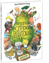

Невероятная история о гигантской груше

Что вас ждет под обложкой: "Эта история берёт своё начало в Сульбю, прекрасном городе на берегу моря. Сульбю в переводе с датского означает "Солнечный город". Все начинается с того, что куда-то пропадает бургомистр! А жители сажают семечко, из которого вырастает гигантская груша. Из груши получается отличный корабль, на котором бесстрашные герои плывут спасать своего бургомистра. Чему учит эта книга: - Дружить; - фантазировать; - увлекаться сюжетом и любить книги; - тренировать память и внимание (когда разглядываешь удивительные картинки). Об авторе Якоб Мартин Стрид - знаменитый датский художник и писатель, лауреат нескольких премий, в том числе Культурной премии кронпринца и кронпринцессы Дании Фредерика и Мэри 2012 года. Его книги для детей отличаются оригинальными захватывающими сюжетами, тонким юмором, красоч?...